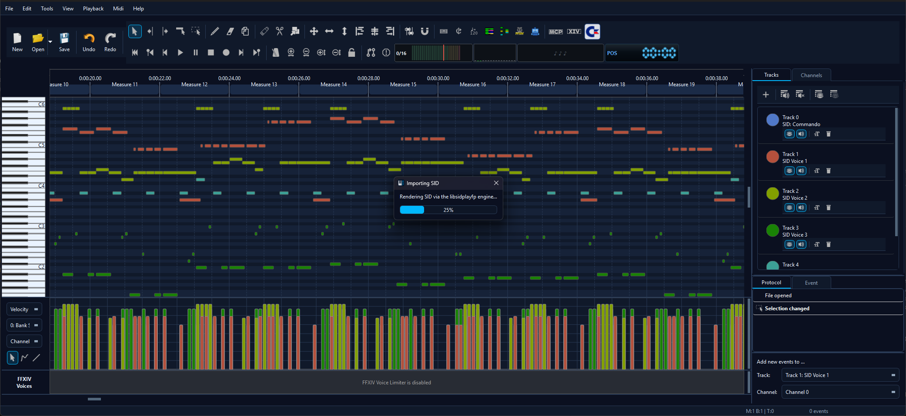
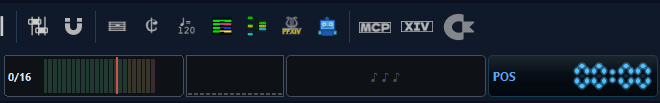
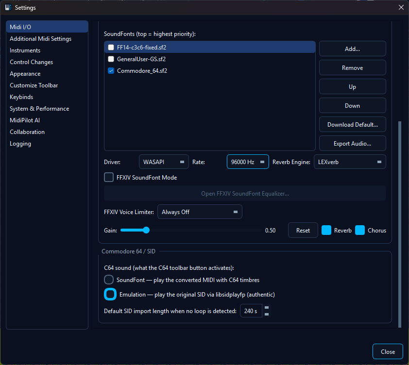

🕹️ Commodore 64 / SID Support
MidiEditor AI opens Commodore 64 .sid tunes like any other
file: the three SID voices become editable MIDI tracks, and you can hear
the result two ways - as the converted MIDI dressed in real
C64 timbres, or as the original SID played through a
cycle-accurate emulator. A single C64 toolbar button
drives whichever of those you choose in Settings.
C64 mode in action - Commando.sid played back in
Emulation mode (click to play with sound).
Opening a SID tune
Use File → Open (or drag a file onto the window) and pick a
.sid file. MidiEditor AI plays the tune internally, watches
what the SID chip does frame by frame, and reconstructs it as a
standard MIDI file you can edit:
- One track per SID voice (the C64 has three), so each melodic line, bass, and lead lands on its own track and MIDI channel.
- A dedicated SID Percussion track for the noise-based drum hits a voice plays between notes.
- Note pitches, lengths, velocities, and fast arpeggios are recovered from the chip's gate and envelope behaviour.

An imported SID tune: three voices plus a percussion track, ready to edit and play.
Hearing it - the C64 button
Imported SID tracks use General-MIDI instruments by default, which won't sound like a C64. The C64 toolbar button switches on the authentic C64 sound. It has two jobs depending on the engine you pick (see Choosing the engine) - but it's always the same one button, and it lights up (the Commodore logo glows) when it's active.

The C64 button toggling off ↔ active (the logo lights up when on).
SoundFont mode - the converted MIDI, C64 timbres
In SoundFont mode the C64 button plays the converted MIDI through a Commodore 64 SoundFont, remapping the imported instruments onto the SID's classic waveform voices - pulse, sawtooth, triangle, and noise. The result is the familiar C64 character, while you keep a normal, editable MIDI file.
.sf2 installed, MidiEditor AI offers to download it
automatically (exactly like FFXIV SoundFont Mode) - just confirm
the prompt. It also switches the MIDI output to the built-in FluidSynth
so the C64 timbres play. You can still install one manually via the
SoundFont manager or by dropping a
.sf2 into the app's soundfonts folder. Turning
the mode off restores your previous (General MIDI) selection automatically.
SoundFont credit: Commodore 64 SoundFont by jubbyo, from musical-artifacts.com/artifacts/8014 (CC BY-NC). Used for non-commercial playback; not bundled with the app - it is downloaded on demand.
Emulation mode - the original SID, authentic
In Emulation mode the C64 button plays the original
.sid file through the cycle-accurate
libsidplayfp engine - the same engine dedicated SID players
use - for true-to-hardware chip audio. Here the button
arms the mode (it glows when armed); the actual playback
is driven by the normal transport, so it behaves like real playback:
- Play starts the original tune from the cursor position.
- Stop and Pause work as usual (Pause parks the cursor where you stopped).
- Seek by clicking to move the cursor, then Play from there.
- The piano-roll cursor follows the audio in real-time sync.
- Playback stops at the end of the note roll instead of looping forever.
Because Emulation mode plays the real SID while you still see (and can edit) the converted MIDI, it's perfect for A/B-ing your edits against the original.
Choosing the engine
The very first time you turn C64 mode on, MidiEditor AI asks once how you want C64 tunes to play - C64 SoundFont or Emulation - and remembers your choice. The C64 SoundFont (~11 MB) is fetched in the background so either engine works instantly later, even if you change your mind.
To switch engines afterwards you don't need to open Settings: a retro
SF2 ↔ EMU toggle appears in the toolbar
next to the C64 button whenever C64 mode is active. The lit side is
the current engine; click to flip. (The C64 button still does the
activating - the toggle only chooses which engine it uses.)
The SF2 ↔ EMU engine toggle (shown only while C64 mode is active).
You can also set the engine in Settings → MIDI I/O → Commodore 64 / SID - the toggle, the first-use prompt and the Settings radio all stay in sync.
.sid loaded? Emulation is locked.
Emulation plays the original .sid bytes, so it only
works while a .sid is the open file. With any other file -
a plain MIDI, or a SID you imported and then saved as .mid -
the SF2 ↔ EMU toggle's EMU side is greyed out and
locked to SF2, and the Settings radio disables Emulation.
SoundFont mode still works on any MIDI, so you can give an ordinary
song C64 timbres (a fun chiptune effect) even though there's nothing to
emulate. Open a .sid and Emulation unlocks again; your engine
preference is remembered the whole time.
Muting voices while it plays
In Emulation mode, muting follows your edits live. Mute a channel or a track (the speaker toggle) and the matching SID voice goes silent immediately - handy for soloing the bass line or dropping the lead while the tune plays. Hiding a track is purely visual and does not mute it, exactly like everywhere else in the editor.
Choosing the engine - Settings
Open Settings → MIDI I/O and find the Commodore 64 / SID section:
| Option | What it does |
|---|---|
| C64 sound | Pick what the C64 toolbar button activates: SoundFont (converted MIDI with C64 timbres) or Emulation (the original .sid via libsidplayfp). |
| Default SID import length | The fallback capture length (5-600 s) used when a tune's loop point can't be detected automatically. |

The Commodore 64 / SID settings block.
A note on PSID vs. RSID tunes
The SID format comes in two flavours. PSID tunes are played by a fast built-in emulator. RSID tunes install their own player and need full C64 hardware emulation, so they're imported through the libsidplayfp engine for accuracy - you don't have to do anything differently, it's automatic (RSID imports just take a moment longer and show a progress bar). The whole feature runs without any C64 ROM files. A handful of unusual tunes may not import cleanly; when that happens the app tells you rather than producing noise.
See also
- Supported Files - every input format MidiEditor AI can open.
- SoundFonts & FluidSynth - loading the C64 SoundFont that SoundFont mode plays through.
- Playback - the transport controls that drive Emulation-mode playback.
- Editing MIDI Files - muting, soloing, and editing the imported voice tracks.